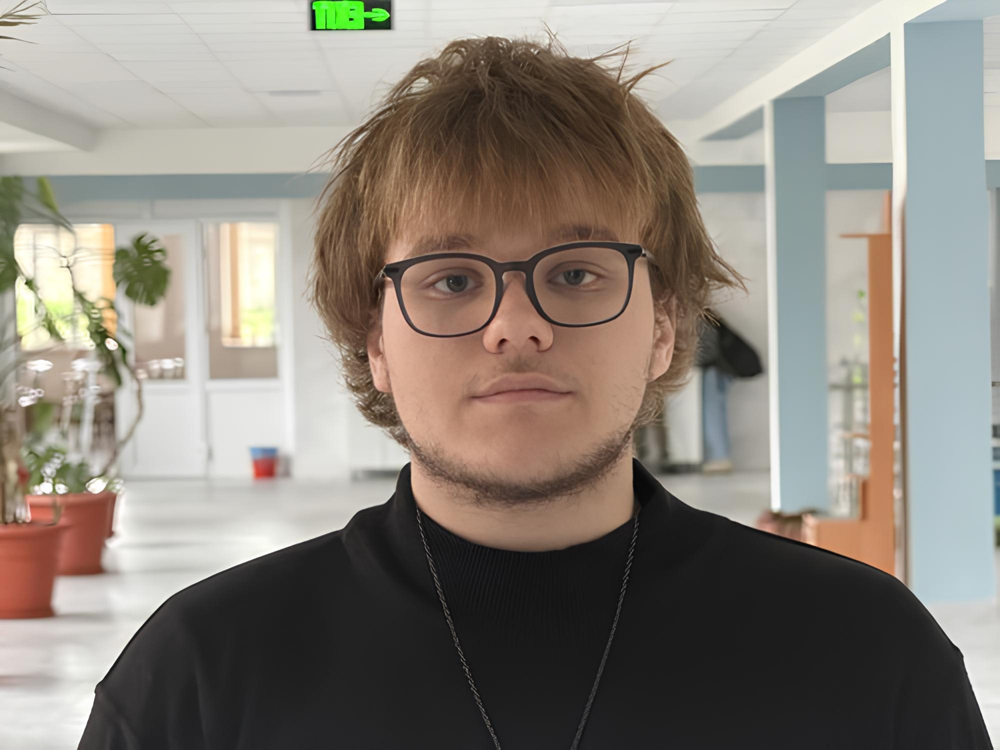
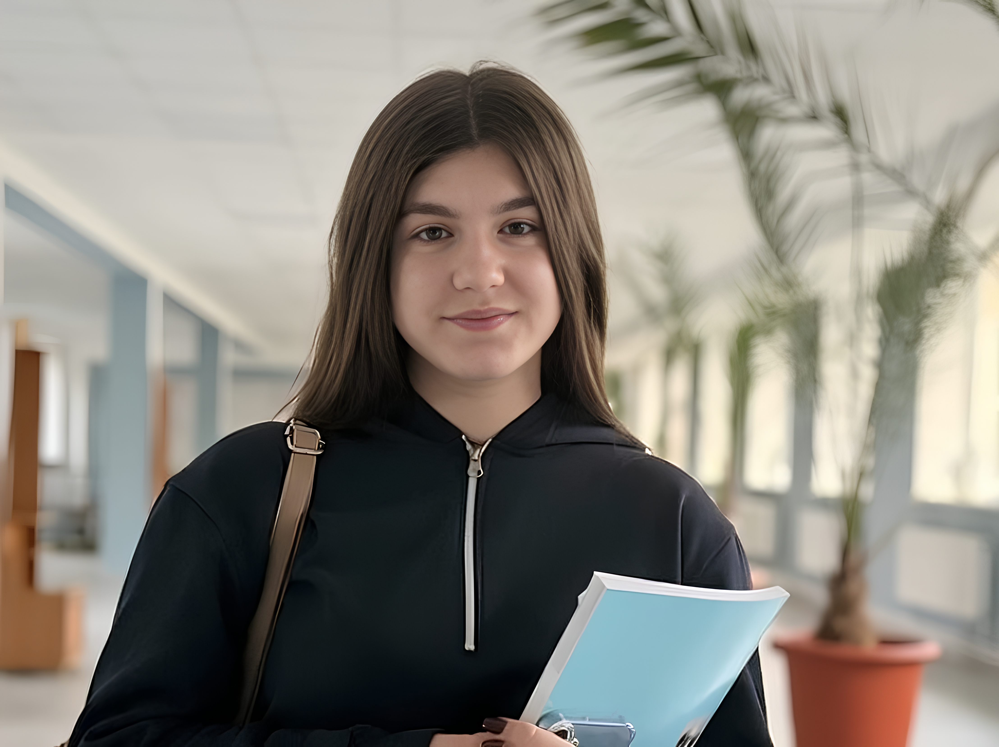

Руководит Ученическим советом, направляет работу команды, помогает реализовывать идеи и представляет интересы учащихся перед администрацией.

Координирует деятельность комитетов, поддерживает проекты и следит за тем, чтобы каждая инициатива была доведена до результата.
Чем занимается наш совет?
Команда активных и инициативных ребят, которые делают жизнь лицея ярче
и насыщеннее.
Организация праздников:
Школьные
мероприятия, тематические дни и творческие вечера, объединяющие
учеников.
Реализация акций:
Благотворительные, экологические и волонтёрские инициативы для
участия учеников в жизни школы и общества.
Проведение конкурсов:
Интеллектуальные, творческие и спортивные конкурсы для раскрытия
талантов и дружеского соперничества.
Выпуск школьной газеты:
Статьи, интервью и освещение жизни лицея глазами учеников.